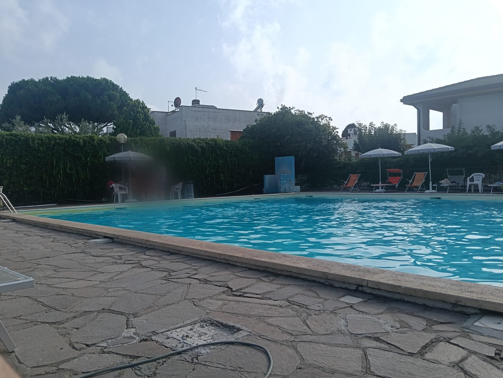

🖨️ Stampa / Salva PDF
Stampa su
A4 verticale
, senza margini («Dimensioni reali» / 100%) e con i
colori e le immagini di sfondo
attivi.
← Torna al sito
Residence Holiday
Tutti in piscina!
Festa in piscina

🗓️ Segna la data
DATA DA DEFINIRE
📲 Come si prenota
⏳
🛟
💬
WhatsApp